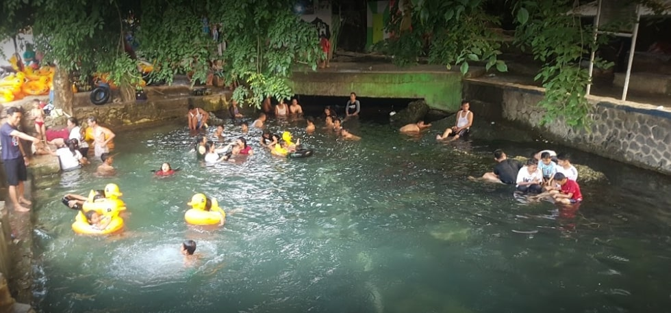

Klapanunggal adalah sebuah kecamatan yang ada di Kabupaten Bogor, Jawa Barat, Indonesia. Kabupaten Bogor sendiri adalah kabupaten di Provinsi Jawa Barat, Indonesia yang pusat pemerintahannya ada di kecamatan Cibinong.
Sejarah
Kabupaten Bogor merupakan salah satu wilayah yang menjadi pusat kerajaan tertua di Indonesia. Catatan Dinasti Sung di Cina dan prasasti yang ditemukan di Tempuran sungai Ciaruteun dengan sungai Cisadane, memperlihatkan bahwa setidaknya pada paruh awal abad ke 5 M di wilayah ini telah ada sebuah bentuk pemerintahan. Sejarah lama Dinasti Sung mencatat tahun 430, 433, 434, 437, dan 452 Kerajaan Holotan mengirimkan utusannya ke Cina. Sejarawan Prof. Dr Slamet Muljana dalam bukunya Dari Holotan ke Jayakarta menyimpulkan Holotan adalah transliterasi Cina dari kata Aruteun, dan kerajaan Aruteun adalah salah satu kerajaan Hindu tertua di Pulau Jawa. Prasasti Ciaruteun merupakan bukti sejarah perpindahan kekuasaan dari kerajaan Aruteun ke kerajaan Tarumanagara dibawah Raja Purnawarman, sekitar paruh akhir sabad ke-5. Prasasti-prasasti lainnya peninggalan Purnawarman adalah prasasti Kebon Kopi di Kecamatan Cibungbulang, Prasasti Jambu di Bukit Koleangkak (Pasir Gintung, Kecamatan Leuwiliang), dan prasasti Lebak (di tengah sungai Cidanghiyang, Propinsi Banten). Pada abad ke 6 dan ke 7 Kerajaan Tarumanagara merupakan penguasa tunggal di wilayah Jawa Barat. Setelah Tarumanagara, pada abad-abad selanjutnya kerajaan terkenal yang pernah muncul di Tanah Pasundan (Jawa Barat) adalah Sunda, Pajajaran, Galuh, dan Kawali. Semuanya tak terlepas dari keberadaan wilayah Bogor dan sekitarnya. Sejarah awal mula berdirinya Kabupaten Bogor, ditetapkan tanggal 3 Juni yang diilhami dari tanggal pelantikan Raja Pajajaran yang terkenal yaitu Sri Baduga Maharaja yang dilaksanakan pada tanggal 3 Juni 1482 selama sembilan hari yang disebut dengan upacara “Kedabhakti”.
Nama Bogor menurut berbagai pendapat bahwa kata Bogor berasal dari kata “Buitenzorg” nama resmi dari Penjajah Belanda. Pendapat lain berasal dari kata “Bahai” yang berarti Sapi, yang kebetulan ada patung sapi di Kebun Raya Bogor. Sedangkan pendapat ketiga menyebutkan Bogor berasal dari kata “Bokor” yang berarti tunggul pohon enau (kawung). Dalam versi lain menyebutkan nama Bogor telah tampil dalam sebuah dokumen tanggal 7 April 1952, tertulis “Hoofd Van de Negorij Bogor” yang berarti kurang lebih Kepala Kampung Bogor, yang menurut informasi kemudian bahwa Kampung Bogor itu terletak di dalam lokasi Kebun Raya Bogor yang mulai dibangun pada tahun 1817. Asal mula adanya masyarakat Kabupaten Bogor, cikal bakalnya adalah dari penggabungan sembilan Kelompok Pemukiman oleh Gubernur Jendral Baron Van Inhof pada tahun 1745, sehingga menjadi kesatuan masyarakat yang berkembang menjadi besar di waktu kemudian. Kesatuan masyarakat itulah yang menjadi inti masyarakat Kabupaten Bogor.
Pusat Pemerintahan Bogor semula masih berada di wilayah Kota Bogor yaitu tepatnya di Panaragan, kemudian berdasarkan Peraturan Pemerintah Nomor 6 Tahun 1982, Ibu Kota Kabupaten Bogor dipindahkan dan ditetapkan di Cibinong. Sejak tahun 1990 pusat kegiatan pemerintahan menempati Kantor Pemerintahan di Cibinong.
Sejumlah pihak dan tokoh masyarakat Kabupaten Bogor sedang mendorong pemekaran otonomi daerah Tingkat II, karena melihat dari luas, jumlah penduduk dan kurangnya pemerataan maka diusulkan pemekaran Kabupaten Bogor Timur. Kabupaten Bogor Timur meliputi beberapa kecamatan seperti Cileungsi, Situsari (Cileungsi Timur), Gunungputri, Jonggol, Cibarusah, Cariu, Tanjungsari, Citeureup dan Sukamakmur. Kabupaten Bogor Timur sudah layak untuk menjadi Kabupaten baru karena ditinjau dari jumlah penduduk bila digabungkan sekitar 1,9 juta Jiwa dan luas wilayah sekitar 1.400 km2.
Geografis

Kawasan Desa Klapanunggal adalah kawasan pertambangan batu karang diwilayah bogor bagian timur karena wilayah tersebut adalah wilayah batuan karst wilayah tersebut merupakan wilayah pertambangan ilegal yang ditambang warga dan juga wilayah yang legal ditambang oleh PT.Holcim Indonesia Tbk yang sekarang menyisakan tebing tebing alam yang biasa menjadi tempat berlatih para Atlet Panjat Tebing Bogor dan Juga Sejumlah Atlet Wilayah JABODETABEK,tebing paling terkenal adalah tebing Kikoja.
Klapanunggal adalah sebuah kecamatan di Kabupaten Bogor, Provinsi Jawa Barat, Indonesia, diwacanakan masuk wilayah Kabupaten Bogor Timur. Kecamatan ini memiliki kode pos 16820.
- Camat: Asep Mulyana, SH
- Luas: 97,64 km²
- Desa/kelurahan: 9
- Provinsi: Jawa Barat
- Jumlah penduduk: 121.218 (2017)
- Hotel: Bintang 3 rata-rata seharga Rp 524.640
- Kepadatan: 1.372,5 jiwa/km²
Kelurahan/desa
- Desa Bantar Jati
- Desa Bojong
- Desa Cikahuripan
- Desa Kembang Kuning
- Desa Klapanunggal
- Desa Leuwikaret
- Desa Ligarmukti
- Desa Lulut
- Desa Nambo
Wisata
Pemandian Sodong
Tidak banyak yang mengetahui bahwa di desa Ligar Mukti, Kecamatan Klapanunggal, Kabupaten Bogor Jawa Barat memiliki tempat wisata yang masih alami dan terjaga kelestariaanya serta menarik banyak wisatawan untuk dijadikan salah satu tempat berlibur saat musim liburan tiba. Banyaknya Gunung Kapur dan area persawahan menjadikan tempat ini memiliki sumber mata air alami yang turun langsung dari Gunung Kapur tersebut.
Terdapat bendungan kecil yang dijadikan tempat pemandian umum yang selanjutnya ditetapkan menjadi tempat wisata yang diberi nama Pemandian Mata Air Sodong. Tempat yang dijadikan wisata pemandiannya memiliki dua kolam, kolam yang pertama berada di bawah sebagai irigasi dan kolam kedua berada diatas yang dibangun oleh masyarakat.
Mata Air Sodong ini tidak pernah mengalami kekeringan meskipun terjadi musim kemarau yang berkepanjangan. Air nya dingin dan memberikan kesejukan dengan air yang berwarna kebiruan yang berdinding batu alam yang terdapat lumut disekitarnya yang menandakan bahwa tempat tersebut masih alami dan terjaga kelestariaanya.
Taman Buah Mekarsari

Taman Buah Mekarsari merupakan tempat agrowisata buatan seluas 264 ha yang terletak di di Kecamatan Cileungsi, Kabupaten Bogor, Jawa Barat. Taman ini merupakan salah satu pusat pelestarian keanekaragaman hayati (buah-buahan tropika) terbesar di Indonesia sekaligus juga tempat penelitian budidaya (agronomi), pemuliaan (breeding) dan perbanyakan bibit unggul untuk kemudian disebarluaskan kepada petani dan masyarakat umum.
Taman Buah Mekarsari dirancang dengan pola Lamtoro Gung sebagai tema utamanya karena tanaman tersebut merupakan simbol tanaman yang serbaguna, sebagai pelestari lingkungan hidup dan pemenuhan kebutuhan hidup.
Taman Buah Mekarsari dibangun di atas areal lahan bekas perkebunan karet milik PTP IX yang sudah tidak produktif. Taman ini dibangun atas prakarsa Ibu Tien Soeharto selaku ketua Yayasan Purna Bhakti Pertiwi (YPBP). Tujuan beliau membangun Taman Buah Mekarsari adalah untuk meningkatkan kualitas dan popularitas buah-buahan Indonesia agar dapat bersaing di pasar nasional dan internasional serta mengangkat harkat dan martabat para petani Indonesia. Taman Buah Mekarsari berperan sebagai kebun koleksi dan percontohan tanaman hortikultura dan buah-buahan tropis Indonesia, sebagai pusat penelitian dan pendidikan bagi masyarakat luas, sebagai sarana lapangan kerja dan sebagai alternatif objek tujuan wisata pertanian yang menarik bagi seluruh kalangan masyarakat.
Bertepatan dengan hari pangan sedunia pada tanggal 14 Oktober 1995, Taman Buah Mekarsari resmi dibuka oleh Presiden ke-2 Republik Indonesia Bapak Soeharto. Pengelolaannya sendiri dilakukan oleh PT Mekar Unggul Sari (MUS) sejak tanggal 14 April 1994 untuk menjaga tujuan awal berdiri serta pengembangannya sebagai objek agrowisata pilihan, pusat pendidikan dan penelitian, serta pusat pelestarian plasma nutfah tanaman hortikultura.
Taman seluas 264 hektare ini dilengkapi dengan sarana wisata untuk wisatawan nusantara maupun mancanegara. Wisata di tengah taman buah didukung oleh berbagai wahana yang mendekatkan pengunjung kepada alam, di anataranya:
- Family Garden
- Rekreasi Danau (25 ha)
- Baby Zoo
- Rusa Tutul
- Garden Center
- Greenhouse Melon
- Sabut Kelapa Outbound
- Bunga Bangkai
- Kids Fun Valley
- Menara Pandang
- Bangunan Air Terjun (Puri Tirto Sari)
- Pongo Show
Kegiatan-kegiatan yang menjadi favorit pengunjung antara lain:
- Company Gathering
- Piknik Keluarga
- Wisata Kebun Buah/Sayur
- Barbeque
- Senam Pagi
- Fruitwalk (jalan-jalan di kebun buah)
- Berkuda (di atas jam 10 pagi)
- Memandikan sapi
- Menanam padi
Curug Citeureup Asri
Citeureup – Bogor adalah salah satu wilayah terdekat dari ibukota Jakarta yang memiliki puluhan tempat wisata yang tidak kalah dengan daerah lain, Diantara puluhan tempat wisata yang tersebar di seluruh kota dan Kabupaten Bogor, ada satu lokasi wisata air yang masih sangat alami, kini lokasi tersebut dikenal banyak orang. Yaitu sungai atau kali gunung Sari, lokasinya ada di desa Gunungsari Kecamatan Citeureup kabupaten Bogor tepatnya di dekat perumahan Bumi Citeureup Asri.
Indahnya panorama alam sungai Gunungsari tersebut seolah membuka mata para pelancong yang mencintai keindahan alam, bagaimana tidak… Dari kejauhan dapat kita lihat megahnya gunung yang menjulang tinggi, lalu hamparan sawah disepanjang aliran tepi sungai, dan air yang mengalir diantara bebatuan yang kokoh. Serta sebuah Curug kecil yang menambah keindahan kali tersebut. Hanya saja keberadaan area sekitar belum tertata dengan rapi.
Dulu kali tersebut hanya kali biasa yang dijadikan tempat anak anak kampung bermain air, namun seiring perjalanan waktu karena lokasinya yang asri dan alami maka banyak wisatawan dari luar Citeureup yang menjadikan lokasi tersebut sebagai salah satu destinasi wisata terdekat dan termurah, berkunjung kesana hanya dipungut biaya parkir motor saja.
Jika kita ingin berkunjung kesana, rutenya sangat mudah sekali dicapai, ketika kita berada di pasar Citeureup, untuk menghindari salah jalan, ada baiknya tanyakan saja perumahan Citeureup asri desa Gunungsari. Nah lokasinya memang tepat disisi perumahan Citeureup Asri. Namun perlu diingat, tempat wisata ini hanya dapat ditempuh oleh motor atau sepeda saja, karena memang belum ada rute untuk kendaraan roda empat.
Studio Alam Genta Buana Paramitha

Di Studio Alam Genta Buana, wisatawan atau masyarakat yang datang bisa melihat secara langsung keadaan saat pembuatan film atau sinema kolosal. Baik itu melihat secara langsung para pemain atau artis yang bermain di film tersebut serta crew film yang bertugas saat proses pembuatan film. Selain itu juga wisatawan yang datang dapat melihat secara langsung set bangunan atau dekorasi buatan yang digunakan guna kebutuhan pembuatan film kolosal.
JungleLand Adventure Theme Park
Taman hiburan dengan wahana klasik, seperti bianglala & bom bom car. Alamat: Kawasan Sentul Nirwana, Jl. Jungle Land No.1, Karang Tengah, Kec. Babakan Madang, Bogor, Jawa Barat 16810.
Gunung Pancar
Gunung Pancar adalah sebuah gunung yang terletak di Kecamatan Citeureup, Kabupaten Bogor, Jawa Barat, Indonesia. Gunung Pancar terletak pada ketinggian 300–800 m dpl dengan topografi landai sampai bergelombang terjal dengan kemiringan sekitar 15-40%.
Keindahan Gunung Pancar tidak lepas dari yang namanya cerita legenda. Karena bagian ini memang menjadi bagian menarik untuk di simak. Salah satunya adalah cerita mengenai Gunung Pancar yang menjadi gunung pertama di pulau jawa.
Masyarakat sekitar percaya bila dahulu saat bumi ini diciptakan, bumi ini masih datar dan belum memiliki apa pun. Dalam keadaan ini bumi terus berguncang, dan mengalami gempa sehingga diciptakanlah yang namanya gunung sebagai penyeimbang dan pasak agar bumi ini tidak terus bergoyang.
Pada saat pertama kali menciptakan, masyarakat percaya bila Gunung Pancar inilah gunung yang pertama kali diciptakan. Maka dari itu disebut sebagai gunung pancar, karena mempunyai arti gunung yang pertama kali muncul.